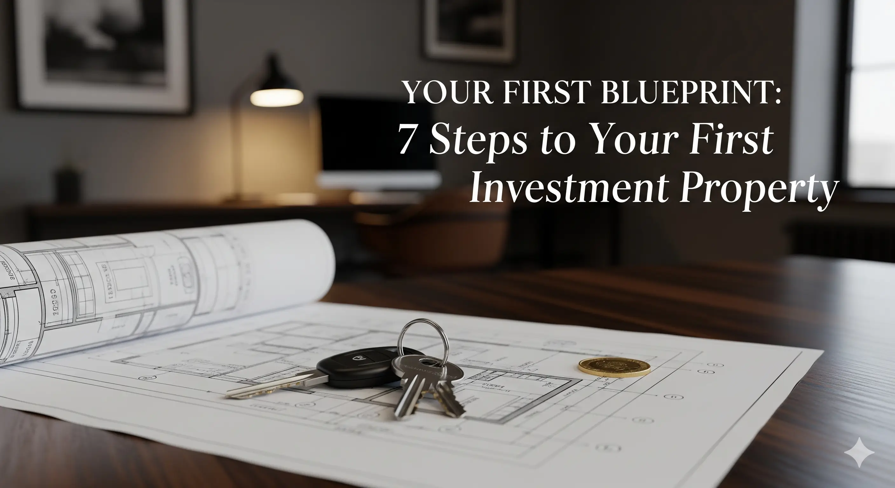

The dream of owning a property that generates monthly income is powerful. But for many, it remains just that—a dream. The process seems complex, risky, and overwhelming. Where do you even begin?
This guide is your blueprint. We'll break down the entire journey into seven clear, manageable steps. Follow this plan, and you'll turn that dream into a tangible, wealth-building asset.
Step 1: Build Your Financial Foundation
Before you even look at a single property, you must have your finances in order. Lenders will scrutinize your financial health. Focus on two key areas:
- Credit Score: Aim for a score of 720 or higher. This will unlock the best interest rates, saving you thousands over the life of the loan.
- Down Payment: For an investment property, you'll typically need a 20-25% down payment. Start saving aggressively and have this cash ready in a separate account.
Step 2: Define Your Strategy & Market
Don't just buy "any" property. You need a clear strategy. Ask yourself: Who is my ideal tenant? What kind of property do they want? This will guide your search. Research specific neighborhoods with strong rental demand, good schools, low crime rates, and job growth.
Step 3: Secure Your Financing (Get Pre-Approved)
This is a non-negotiable step. Getting pre-approved for a mortgage *before* you start hunting does two things: it tells you exactly how much you can afford, and it shows sellers that you are a serious, qualified buyer. A pre-approval letter gives your offer immense credibility.
Step 4: The Hunt Begins
Now the fun part starts. Work with a real estate agent who has experience with investment properties. They will understand your goals are about numbers and returns, not just finding a "dream home." Look at dozens of properties online and visit the most promising ones in person.
Step 5: Run the Numbers (Never Skip This)
Emotions can't buy an investment property; math does. For every serious contender, you must calculate the potential **cash flow**—the money left over after all expenses are paid. A basic formula is:
(Gross Rental Income) - (Vacancy Loss) - (Mortgage + Taxes + Insurance + Maintenance + Property Management) = Cash Flow
Step 6: Due Diligence is Everything
Once your offer is accepted, the real work begins. This is your chance to verify everything. Hire a professional inspector to give you a detailed report on the property's condition, from the foundation to the roof. The property must also be appraised by the lender to ensure it's worth what you're paying.
Step 7: Close the Deal & Get Your Keys
The closing process involves signing a mountain of paperwork. Once it's all signed and the funds are transferred, the property is officially yours. Congratulations, you are now a real estate investor! The next phase is finding a great tenant and managing your new asset.
Buying your first investment property is a meticulous process, but it's not magic. By following these steps, you build a solid foundation for a successful and profitable real estate portfolio.